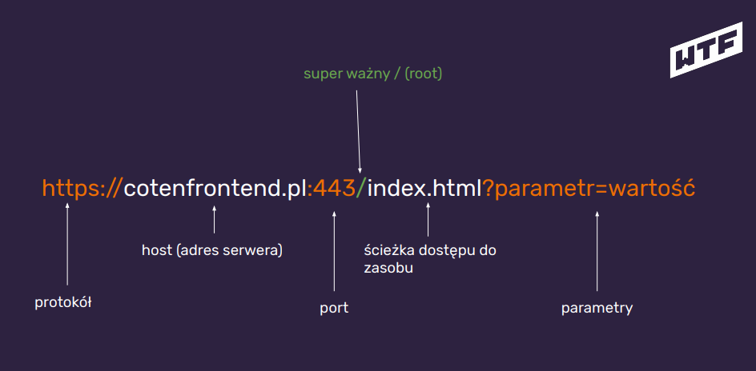
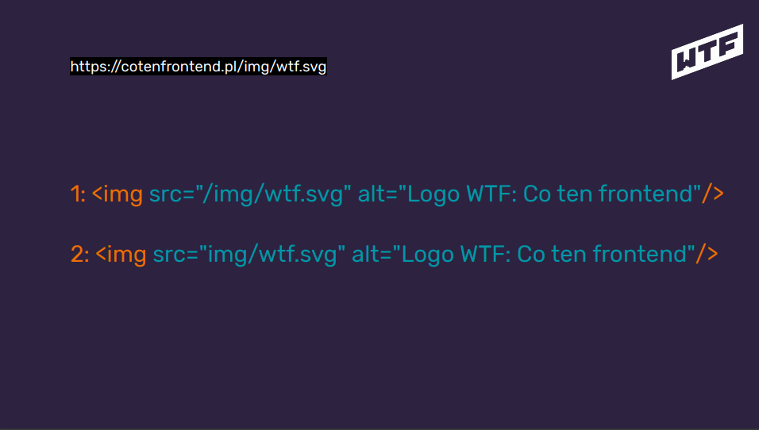
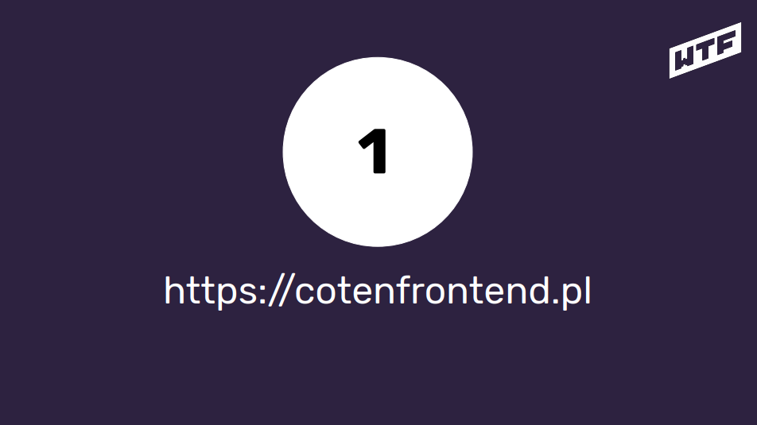
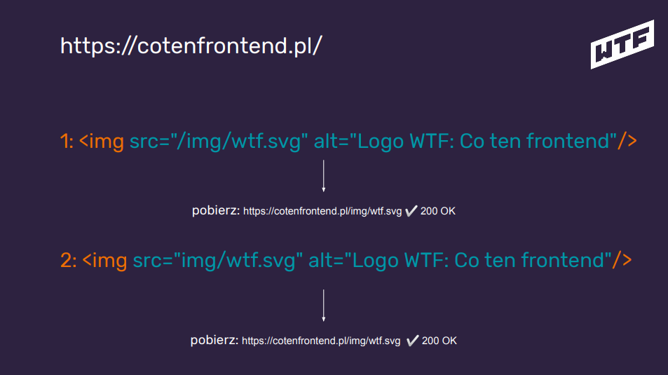
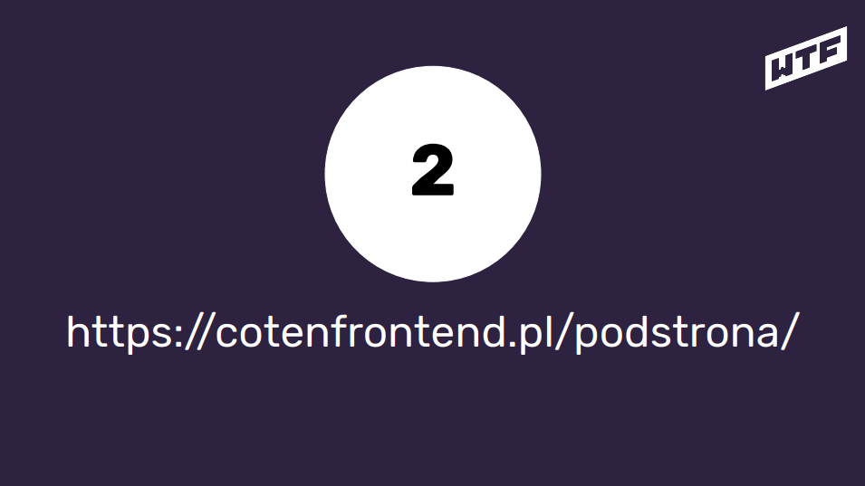
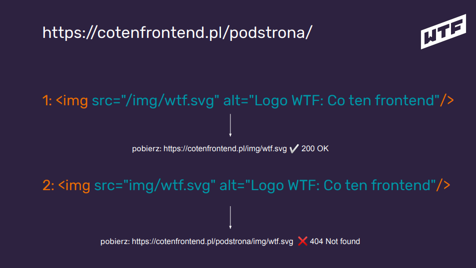

po znalezieniu serwera odpytuje go o index (jeślipodamy sam adres serwera) - to co jest indexem
zależy od konfiguracji serwera (nie musi to być index.html, choć w przypadku stron statycznych jest
to najczęstszy przypadek)
serwer wysyła do przeglądarki zawartość html
przeglądarka wczytuje html i szuka wszystkich dodatkowych zasobów: style, skrypty, obrazki itp. i
dla każdego z zasobów wykonuje zapytanie
Przeglądarka parsuje i renderuje stronę
SKRÓTY
HTTP - Hypertext Transfer Protocol - Protokół, którego używa przeglądarka
(w większości przypadków). Protokół do transportowania html-a i całej reszty, którą widzisz na stronach
HTTPS - Hypertext Transfer Protocol Secure
URL - Uniform Resource Locator
KODY ODPOWIEDZI HTTP
1xx - Hold on
2xx - OK / Here you go
30x - Szukasz w złym miejscu - przekieruję Cię w dobre (bo wiem gdzie) / Go away
404 - Nie mam tego czego potrzebujesz. Sorry. / You fucked up
50x - Nie czuję się najlepiej… Błąd wewnętrzny serwera./ I fucked up
Czym jest root?






Podsumowanie
protokół który obsługuje strony internetowe i ich zawartość to HTTP (aktualnie coraz częściej HTTP/2)
komunikacja przeglądarka - serwer odbywa się na zasadach request - response
odpowiedzi serwera mają różne kody (i pozwala nam to na diagnozowanie problemów)
root (/) jest istotną częścią ścieżek do zasobów (i dobrze wiedzieć jak działa :))